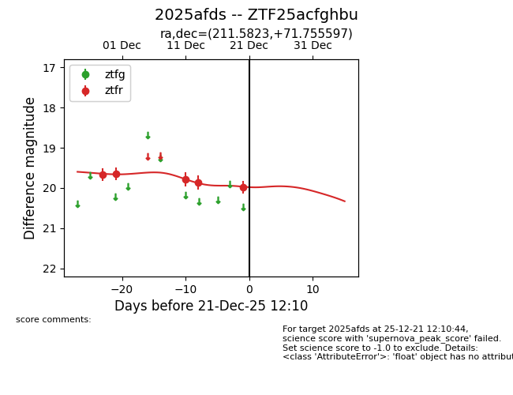
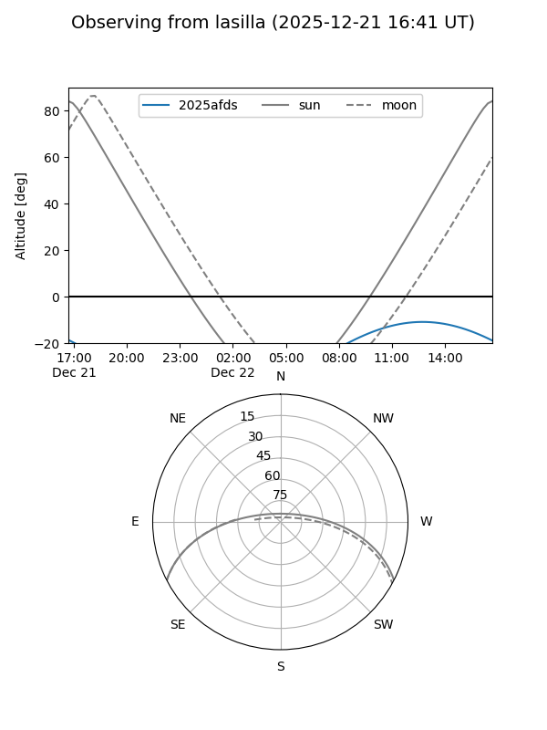
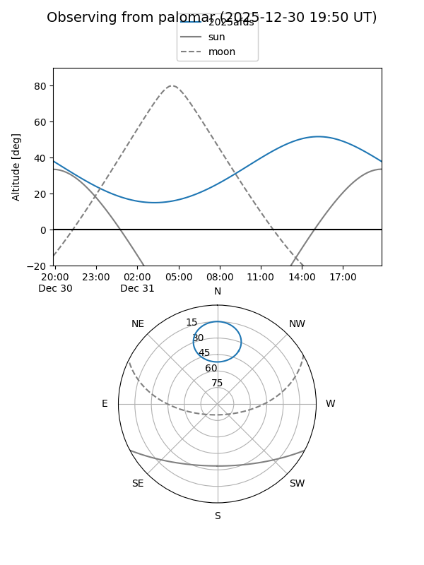
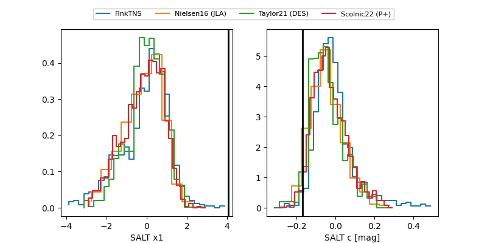

2025afds
Target 2025afds at 2025-12-20 16:32
Aliases and brokers:
FINK: fink-portal.org/ZTF25acfghbu
Lasair: lasair-ztf.lsst.ac.uk/objects/ZTF25acfghbu
ALeRCE: alerce.online/object/ZTF25acfghbu
TNS: wis-tns.org/object/2025afds
YSE: ziggy.ucolick.org/yse/transient_detail/2025afds
alt names
ZTF25acfghbu (ztf,fink_ztf)
2025afds (tns,yse)
Coordinates:
equatorial (ra, dec) = 211.5823,+71.75560
equatorial (HMS+DMS) = 14:06:19.76,+71:45:20.15
galactic (l, b) = (114.8764,+44.18252)
Flags:
Photometry:
last ztfr=19.97
5 ztfr detections
Lightcurve

Visibility


Additional plots
